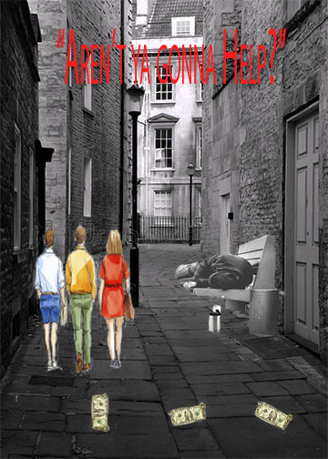

In my images, I wanted my images to contain aspects that were modern and aspects that are more vintage. Thus, I used some images that were colored and some that are in black and white. In my college, I spoke about gender equality and the homelessness crisis. I spoke about gender inequality because I have done much research on that subject and I admire many women, such as Alice Paul, who have devoted their entire lives to making sure that women would have the same rights as men. However, we still have some way to go. The homelessness crisis means a lot to me as well because since I live in New York, I see many homeless people. It makes me sick because people should be taken care of, and not forced to sleep on the streets. The reason I used Black and White images as well as colored images in both of my collages is in order to show that both these issues are enduring issues. I used the brush in Adobe to combine my images seamlessly because I felt while each image tells a great story, I could use all stories together to tell a story of struggling, victory, and leave the audience wondering perhaps what has been done to fight the issues of inequality and poverty. Maybe the audience will wonder if they possibly can do more! Additionally, for my inequality image. I did use the shapes mask to create a rectangular shape as a background for my text box because I wanted Alice Paul’s quote to stand out, but also leave my readers curious as to how they can do more. All images (except for that of Alice Paul) were found on public domains.
